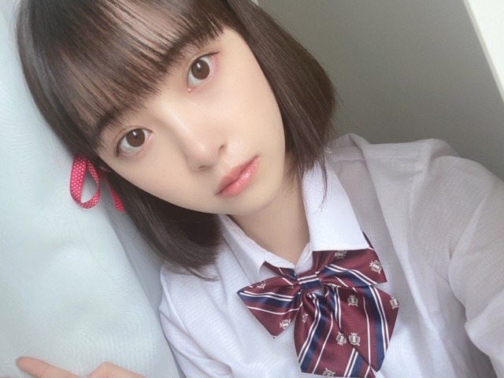
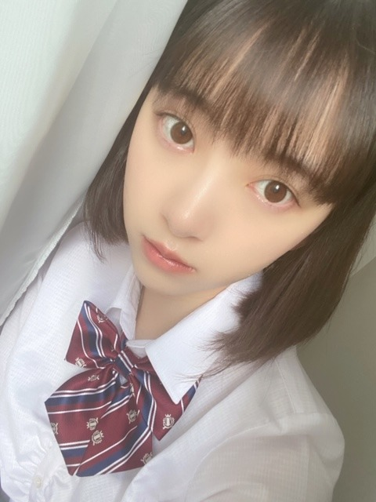
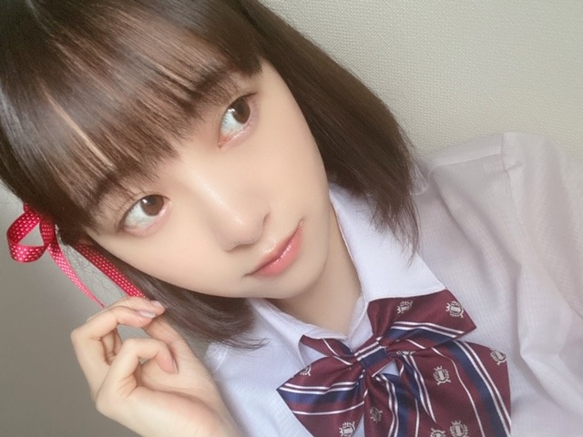

2020/0512Tue君の名は。
久しぶりに 君の名は。
を観たら改めていい作品だなって...
ぽろぽろ泣きました...
三葉たちの岐阜弁を聞くと
岐阜に帰りたくなります
ちなみに手に すきだ と
書かれているのを見て
これじゃ、名前わかんないよって言うシーンと
瀧くんが三葉になって
ぺらぺらと岐阜弁を話すシーンと
三葉が花火大会で髪を切ってくるシーンが
特にすきです
そして再現してほしいキャラクターに
宮水三葉ちゃんがあったので
挑戦してみました!
三葉との共通点は岐阜出身で
髪を衝動で切る癖があるところくらいです




髪短い三葉

髪が長い三葉
クオリティ低くてすみません...
新海誠監督の作品って
音楽との相性が抜群で心地いいですよね
特に
スパークル が流れる
タイミング、絶妙...
" 愛し方さえも 君の匂いがした
歩き方さえも その笑い声がした
いつか消えてなくなる 君のすべてを
この眼に焼き付けておくことは
もう権利なんかじゃない 義務だと思うんだ "
（ ｉ _ ｉ ）エモい......
好きなアニメや映画ドラマを見返す
いい機会なのでたくさん観たいと思います!
次は何を再現しようかな~
#未央奈の再現チャレンジ
☺︎
ではでは
2020/05/12 18:24
コメント(489)
めっちゃ可愛い❤️
ショートが好き❗️
ショートが好き❗️
未央奈ちゃん、こんばんは
君の名は。俺も見たけど、景色の絵とか音楽が良かったね✨
制服姿の未央奈ちゃん、めっちゃ可愛い
君の名は。俺も見たけど、景色の絵とか音楽が良かったね✨
制服姿の未央奈ちゃん、めっちゃ可愛い
更新頻度が高くて嬉しいです！
マジで癒されてま～す
マジで癒されてま～す
未央奈の再現チャレンジ楽しみまってます！！
初コメントです！
みおなさんスキです（；＿；）
魔女の宅急便がスキなのですが、ジブリの再現とかどうですか！
みおなさんスキです（；＿；）
魔女の宅急便がスキなのですが、ジブリの再現とかどうですか！
未央奈ちゃんかわいすぎる。。。
マジで三葉や、、、いやもはや三葉より三葉まである。
手首に組紐つけて掌に「すきだ」って書くやつ、前に握手会でやったの思い出したwww
懐かしいね、、、未央奈ちゃん真顔やったけど笑
マジで三葉や、、、いやもはや三葉より三葉まである。
手首に組紐つけて掌に「すきだ」って書くやつ、前に握手会でやったの思い出したwww
懐かしいね、、、未央奈ちゃん真顔やったけど笑
未央奈ちゃん、ブログ更新ありがとう！
君の名は懐かしいね。
初めて見た時は涙が止まらいくらい感動した…
再現してくれてありがとう！
めっちゃ三葉ちゃんになりきってるし可愛すぎる！
次の再現も楽しみ!!
またね！
君の名は懐かしいね。
初めて見た時は涙が止まらいくらい感動した…
再現してくれてありがとう！
めっちゃ三葉ちゃんになりきってるし可愛すぎる！
次の再現も楽しみ!!
またね！
お疲れ様！
めちゃ可愛いからクオリティは気にしないよ♪
早く乃木中とかの収録再開してほしいね！
めちゃ可愛いからクオリティは気にしないよ♪
早く乃木中とかの収録再開してほしいね！
コロナが収束したらいつでも岐阜に帰ってきて下さい！待ってます！
「君の名は。」で三葉が、手に書かれた「すきだ」という文字を見て、「これじゃ、分からないよ…。」と涙を流しながらもどこか嬉しいという気持ちが垣間見える、というシーンが僕も大好きで、何度も泣きました…。！笑
本当に感動しますよね…。共感してくれる人が今まで全然いなかったので、同じ気持ちを未央奈さんと共有できて嬉しいです！！！
もしかしたら、もう手に取っているかも知れませんが、是非「君の名は。」を本で読んでいただきたいです！
新海誠監督の本は、描写が細かく書かれているので本当にオススメですよー！
本当に感動しますよね…。共感してくれる人が今まで全然いなかったので、同じ気持ちを未央奈さんと共有できて嬉しいです！！！
もしかしたら、もう手に取っているかも知れませんが、是非「君の名は。」を本で読んでいただきたいです！
新海誠監督の本は、描写が細かく書かれているので本当にオススメですよー！
堀ちゃん！今日も更新ありがとう❗
堀ちゃんの岐阜弁が早く聞いて見たいなぁ❗
三葉のコスプレも最高に可愛いよ❗
堀ちゃんの岐阜弁が早く聞いて見たいなぁ❗
三葉のコスプレも最高に可愛いよ❗
こんばんは！
写真めっちゃかわいいですっヾ(｡>﹏<｡)ﾉﾞ✧*。
君の名は。本当に良い作品ですよね！
私もまた観たくなりました！
写真めっちゃかわいいですっヾ(｡>﹏<｡)ﾉﾞ✧*。
君の名は。本当に良い作品ですよね！
私もまた観たくなりました！
かわいい！！！
かわいすぎる！！！！
制服！！！！
かわいい
君の名は。は映画館で観なかったから
ちょっと後悔してるんだー！
次のリクエストはとくに思いつかないけど
第2弾を楽しみにしてます✨
かわいすぎる！！！！
制服！！！！
かわいい
君の名は。は映画館で観なかったから
ちょっと後悔してるんだー！
次のリクエストはとくに思いつかないけど
第2弾を楽しみにしてます✨
未央奈さんこんばんは＼(⌒日⌒）／
更新ありがとうございます♪
君の名は
僕も見ました単行本も持ってます。
感動できるいいアニメですよねー
三葉なりきり可愛いいー( ⸝⸝⸝•_•⸝⸝⸝ )♡︎♡︎
家にこもってる休みの日に
久しぶりに「僕は明日、昨日の君とデートする」主演福士蒼汰、小松菜奈。
のDVD持ってて見ました。
めっちゃ泣ける恋愛ストーリーです。
見た事あるかな？
泣ける映画です。
興味があったら見て見てくださいねー
更新ありがとうございます♪
君の名は
僕も見ました単行本も持ってます。
感動できるいいアニメですよねー
三葉なりきり可愛いいー( ⸝⸝⸝•_•⸝⸝⸝ )♡︎♡︎
家にこもってる休みの日に
久しぶりに「僕は明日、昨日の君とデートする」主演福士蒼汰、小松菜奈。
のDVD持ってて見ました。
めっちゃ泣ける恋愛ストーリーです。
見た事あるかな？
泣ける映画です。
興味があったら見て見てくださいねー
可愛すぎる
みおなちゃんかわいいですね！もしよかったら魔女の宅急便のききの再現してほしいです！
新海誠さん作品ほんといいですよね〜〜！！！！！
これじゃ名前わかんないよは本当に名シーンすぎます、
わたしは黄昏時になった瞬間時間が交わって２人が会えるシーンもすきです！
ああわたしもみたくなってきました、、
ぜひ星を追う子どもとか秒速五センチメートルのみおなさんの感想もききたいです
これじゃ名前わかんないよは本当に名シーンすぎます、
わたしは黄昏時になった瞬間時間が交わって２人が会えるシーンもすきです！
ああわたしもみたくなってきました、、
ぜひ星を追う子どもとか秒速五センチメートルのみおなさんの感想もききたいです
みおな、こんばんは。
僕は、東濃出身ですけど、最近は、東濃弁を話さないので、もう忘れてしまいました。
でも、地元に帰れば、時々は出るかな。小さい時に覚えたものって、いくつになっても忘れないものですね。
みおなも、メンバーと話していて、岐阜弁が出ることありますか？
僕は、東濃出身ですけど、最近は、東濃弁を話さないので、もう忘れてしまいました。
でも、地元に帰れば、時々は出るかな。小さい時に覚えたものって、いくつになっても忘れないものですね。
みおなも、メンバーと話していて、岐阜弁が出ることありますか？
こんばんは♡
気の名は。名作ですよね♪
岐阜が舞台なのも誇らしいですよね！
星空が綺麗で広大なのも印象的です☆
三葉ちゃん上手く再現されてますね！
衝動的なところも魅力的なのですよ✨
新海監督作品は絵も美しいですよね！
気持ちも美しい人なのだと思います✌
共鳴する気持ちも美しいのですよ♡☺
気の名は。名作ですよね♪
岐阜が舞台なのも誇らしいですよね！
星空が綺麗で広大なのも印象的です☆
三葉ちゃん上手く再現されてますね！
衝動的なところも魅力的なのですよ✨
新海監督作品は絵も美しいですよね！
気持ちも美しい人なのだと思います✌
共鳴する気持ちも美しいのですよ♡☺
ブログ更新ありがとう
「君の名は」まだ観たことないから観たくなった
兵庫県出身やから岐阜弁も気になる！
千と千尋の神隠しの千尋の再現見たいなぁ
「君の名は」まだ観たことないから観たくなった
兵庫県出身やから岐阜弁も気になる！
千と千尋の神隠しの千尋の再現見たいなぁ
こんばんは。
君の名は。誰もが認める名作ですね。
周期的に観たくなる作品ですよね。
再現三葉さん、とても可愛くドキドキですよ。
可愛いです、癒しのコレクションに早速追加です。
コレクションの中でもかなりのランクです。
髪飾りも組紐風でかなりのリアリティさ。
髪が長い三つ葉にも見惚れました。
一番ドキドキしましたね。
かなりのクオリティです。
再現してくれてありがとうございます。
耳をすませばの雫さんもきっとやってくれますよね。
他にも楽しみですよ、魅せてくださいね。
更新ありがとうございました！
暑くなってきました。
お身体にはお気をつけてくださいね。
頑張って行きましょう！
君の名は。誰もが認める名作ですね。
周期的に観たくなる作品ですよね。
再現三葉さん、とても可愛くドキドキですよ。
可愛いです、癒しのコレクションに早速追加です。
コレクションの中でもかなりのランクです。
髪飾りも組紐風でかなりのリアリティさ。
髪が長い三つ葉にも見惚れました。
一番ドキドキしましたね。
かなりのクオリティです。
再現してくれてありがとうございます。
耳をすませばの雫さんもきっとやってくれますよね。
他にも楽しみですよ、魅せてくださいね。
更新ありがとうございました！
暑くなってきました。
お身体にはお気をつけてくださいね。
頑張って行きましょう！
ストーリー見た瞬間ファ？ってなりました
可愛すぎです
可愛すぎです
未央奈、可愛いよ。ショートやっぱりすこ。
未央奈の、岐阜べんもすこ。
栗きんとんは、めっちゃかわいかった。
未央奈の、岐阜べんもすこ。
栗きんとんは、めっちゃかわいかった。
更新ありがとう( ；∀；)
ブログ更新ありがとうございますー
「君の名は」いい作品ですよね〜
なにより背景がめちゃくちゃ綺麗！
公開されてから何回も映画館に足を運んだ記憶があります(笑)
だんだん暑くなってきたので体調には気をつけてください〜
ではでは〜
「君の名は」いい作品ですよね〜
なにより背景がめちゃくちゃ綺麗！
公開されてから何回も映画館に足を運んだ記憶があります(笑)
だんだん暑くなってきたので体調には気をつけてください〜
ではでは〜
未央奈ブログ更新ありがとう！
君の名は良い作品だよね。岐阜弁も未央奈にとっては故郷の言葉だから、思い入れも特別なのかな。
三葉の再現めちゃくちゃ可愛い！未央奈は制服が似合うね。
音楽との相性すごくわかる！音楽の使い方って映画の印象を左右するくらいに記憶に残るよね。スパークル良い曲。
映画の再現って映画好きな未央奈らしくてすごく良いよ。次は何を再現してくれるかな。
では！
君の名は良い作品だよね。岐阜弁も未央奈にとっては故郷の言葉だから、思い入れも特別なのかな。
三葉の再現めちゃくちゃ可愛い！未央奈は制服が似合うね。
音楽との相性すごくわかる！音楽の使い方って映画の印象を左右するくらいに記憶に残るよね。スパークル良い曲。
映画の再現って映画好きな未央奈らしくてすごく良いよ。次は何を再現してくれるかな。
では！
ブログありがと〜！
かわいい！
かわいい！
再びコメントします☺
堀ちゃんのポロポロ泣いたにではないけど
今NHKのうたコン見ていて
勿論こんな時やから生放送やけど、リモートとリクエストでの過去の映像やけど
ごめんね、チーム坂道ではないけど
山本彩ちゃんリモートで出ていて
365日の紙飛行機をギターでの弾き語り
なんかジーンときたよ✨
やはり歌って良いね☺
早くチーム乃木坂の歌やパフォーマンスを生放送で見たいと思いました☺
なんかごめんな。
ではではまたね☺
体調気をつけてね。
ほなね、堀ちゃん☺
堀ちゃんのポロポロ泣いたにではないけど
今NHKのうたコン見ていて
勿論こんな時やから生放送やけど、リモートとリクエストでの過去の映像やけど
ごめんね、チーム坂道ではないけど
山本彩ちゃんリモートで出ていて
365日の紙飛行機をギターでの弾き語り
なんかジーンときたよ✨
やはり歌って良いね☺
早くチーム乃木坂の歌やパフォーマンスを生放送で見たいと思いました☺
なんかごめんな。
ではではまたね☺
体調気をつけてね。
ほなね、堀ちゃん☺
最近のスマホが高性能高画質に
なったからなのか
(´･ω･｀)知らんがなのスマホが
ただ単にボロいだけなのか
(´･ω･｀)知らんがなの家のWi-Fiが
クソなのかわかりませんが
ブログやモバメで送ってくれた
画像がじんわりとゆっくりと
時間をかけて開きます
まあ、これは
焦らしプレイを楽しんどけ！って
いうことなのでしょうね
絵本作家の
エドワード・ゴーリーが好きです
読んでゾクゾクする感覚が
たまらないですね
あっ、特にオススメはしません
むしろ良い子は読んじゃダメです
さて、明日も今日と
少しだけ違う一日が待っている
のでしょうね
なったからなのか
(´･ω･｀)知らんがなのスマホが
ただ単にボロいだけなのか
(´･ω･｀)知らんがなの家のWi-Fiが
クソなのかわかりませんが
ブログやモバメで送ってくれた
画像がじんわりとゆっくりと
時間をかけて開きます
まあ、これは
焦らしプレイを楽しんどけ！って
いうことなのでしょうね
絵本作家の
エドワード・ゴーリーが好きです
読んでゾクゾクする感覚が
たまらないですね
あっ、特にオススメはしません
むしろ良い子は読んじゃダメです
さて、明日も今日と
少しだけ違う一日が待っている
のでしょうね
更新待ってました〜
君の名は。って岐阜だったっけ…記憶が飛んでおります…笑
未央奈ちゃんの再現めっちゃ好きなの( ¨̮ )
三葉(未央奈ちゃん)が可愛すぎる…
魔女の宅急便のキキやって欲しいなぁ
今の未央奈ちゃんの髪の毛の長さちょうどいいから︎☺︎
ほとんど毎日ブログ更新してくれてありがとう✩.*˚
次の更新も待ってます⸜( ॑꒳ ॑ )⸝
君の名は。って岐阜だったっけ…記憶が飛んでおります…笑
未央奈ちゃんの再現めっちゃ好きなの( ¨̮ )
三葉(未央奈ちゃん)が可愛すぎる…
魔女の宅急便のキキやって欲しいなぁ
今の未央奈ちゃんの髪の毛の長さちょうどいいから︎☺︎
ほとんど毎日ブログ更新してくれてありがとう✩.*˚
次の更新も待ってます⸜( ॑꒳ ॑ )⸝
こんにちは。
君の名はとてもいい映画ですよね。物語りのおもしろさはもちろん。綺麗な描写とか切なくなる感じとか。
未央奈さんのブログを見るようになってから歌詞の世界観を掘り下げたり、映画についてしっかり考えたりする様になりました。
三葉の再現もばっちりですね！また楽しみにしています。
君の名はとてもいい映画ですよね。物語りのおもしろさはもちろん。綺麗な描写とか切なくなる感じとか。
未央奈さんのブログを見るようになってから歌詞の世界観を掘り下げたり、映画についてしっかり考えたりする様になりました。
三葉の再現もばっちりですね！また楽しみにしています。
わーめっちゃかわいい！
クオリティ低くなんかないよ！
実写版三葉だ♪
すごいね！
和の雰囲気や幼い感じもメイクで出せるのね
メイクを研究してるみおなならではの企画で
とっても良かった！
大変かもだけど、また次が見たいな～
ちなみに黄昏時に一瞬二人が会えたとき、
時間のない中やけに落ち着いている瀧くんが
男らしかったのが印象に残ってます◎
クオリティ低くなんかないよ！
実写版三葉だ♪
すごいね！
和の雰囲気や幼い感じもメイクで出せるのね
メイクを研究してるみおなならではの企画で
とっても良かった！
大変かもだけど、また次が見たいな～
ちなみに黄昏時に一瞬二人が会えたとき、
時間のない中やけに落ち着いている瀧くんが
男らしかったのが印象に残ってます◎
こんばんは。ブログ更新ありがとうございます。
君の名は。は大ヒットでしたね。三葉ちゃん再現、うまくいっていると思います。とても可愛いからOKですっ！！
今の段階でまだ自粛が続いているので、秋公開の新作映画、ドラマ、アニメ等はなさそうですが、しばらくの間は豊富な旧作ソフトを楽しむ時間はありそうです。
ではまた。
君の名は。は大ヒットでしたね。三葉ちゃん再現、うまくいっていると思います。とても可愛いからOKですっ！！
今の段階でまだ自粛が続いているので、秋公開の新作映画、ドラマ、アニメ等はなさそうですが、しばらくの間は豊富な旧作ソフトを楽しむ時間はありそうです。
ではまた。
未央奈ちゃん♡♡
更新ありがとうございます^^*
君の名は。すごーくいい映画ですよね(*´˘`*)♡
感動しますよね(´；ω；｀)
未央奈ちゃんの再現…リアル過ぎ…
そして…可愛すぎます(;_;)
制服姿めっちゃ似合ってます⸜(* ॑꒳ ॑* )⸝⋆*
未央奈ちゃんも体調には気を付けてくださいね。
大好きです♡♡
更新ありがとうございます^^*
君の名は。すごーくいい映画ですよね(*´˘`*)♡
感動しますよね(´；ω；｀)
未央奈ちゃんの再現…リアル過ぎ…
そして…可愛すぎます(;_;)
制服姿めっちゃ似合ってます⸜(* ॑꒳ ॑* )⸝⋆*
未央奈ちゃんも体調には気を付けてくださいね。
大好きです♡♡
未央奈ちゃんの、三葉ちゃんのコスプレめっちゃかわいい 君の名はって泣かせ上手ですね。
ブログ更新有り難う
君の名は
本当衝撃的に良かったですね。
未央奈ちゃんバージョン三葉かわいい
次観るオススメは、
ONE PIECEのスタンピート
見たこと有るかな
ハンコックのルフィ愛が可愛いよ
是非是非
君の名は
本当衝撃的に良かったですね。
未央奈ちゃんバージョン三葉かわいい
次観るオススメは、
ONE PIECEのスタンピート
見たこと有るかな
ハンコックのルフィ愛が可愛いよ
是非是非
君の名は。は本当に革命的に感動した！
未央奈ちゃんの写真の可愛さにも感動させて頂きました。。
未央奈ちゃんの写真の可愛さにも感動させて頂きました。。
更新ありがとう！！
この未央奈可愛すぎる
いろんなシリーズ見たいな！
この未央奈可愛すぎる
いろんなシリーズ見たいな！
みおなちゃんのパジャマを、三葉とお揃いにしてほしいな。
ブログ更新ありがとう
最近、インスタの投稿が多いから楽しく見てるよ！
写真の未央奈めちゃくちゃ可愛い
君の名は、良い映画だよね！
時間があるから見返してみようかな。
家にいる時間が長いから、体を休ませて体調を崩さないようにね！
写真集の発売楽しみにしてるよ。
最近、インスタの投稿が多いから楽しく見てるよ！
写真の未央奈めちゃくちゃ可愛い
君の名は、良い映画だよね！
時間があるから見返してみようかな。
家にいる時間が長いから、体を休ませて体調を崩さないようにね！
写真集の発売楽しみにしてるよ。
未央奈ブログ更新ありがとう!
「君の名は」最初の10分くらいしか見てない、、
でも三葉似てる!
制服似合いすぎてヤバい!
まだ全然イケるね!
いつもブログ更新ありがとね!
これからも応援してるよ!
体調には気をつけてね!
by未央奈推しのブラックコーヒー
「君の名は」最初の10分くらいしか見てない、、
でも三葉似てる!
制服似合いすぎてヤバい!
まだ全然イケるね!
いつもブログ更新ありがとね!
これからも応援してるよ!
体調には気をつけてね!
by未央奈推しのブラックコーヒー
堀ちゃん！更新ありがとう！！
再現チャレンジ！君の名はー！
めちゃめちゃ三葉似てるね！！
再現度高くてびっくりよ！
このクオリティだと
次回も期待大ですよ！！！
次の再現も楽しみにしてるよ！
次回の更新も楽しみにしてるよ！
では！
おやすみおな〜！
再現チャレンジ！君の名はー！
めちゃめちゃ三葉似てるね！！
再現度高くてびっくりよ！
このクオリティだと
次回も期待大ですよ！！！
次の再現も楽しみにしてるよ！
次回の更新も楽しみにしてるよ！
では！
おやすみおな〜！
未央奈〜
三葉ちゃんめっちゃ再現されてる！すごすぎ！クオリティー高いね！！
君の名は私も観ました！もう4年前だよね！懐かしいな〜
昨年テレビでやってたのをまた観てやっぱ面白いな〜って思ったのを思い出した〜
そういえば君の名はも岐阜ってのを申し訳ないけど今思い出した
まだ岐阜に行ったことがなくて、未央奈ちゃんの聖地巡礼も君の名はの聖地巡礼もしたいな〜って思ってます！
#未央奈の再現チャレンジ また楽しみにしてます！
最近何回も言ってる気がするけど、こうやってファンを楽しませてくれる未央奈ちゃん大好きです！
三葉ちゃんめっちゃ再現されてる！すごすぎ！クオリティー高いね！！
君の名は私も観ました！もう4年前だよね！懐かしいな〜
昨年テレビでやってたのをまた観てやっぱ面白いな〜って思ったのを思い出した〜
そういえば君の名はも岐阜ってのを申し訳ないけど今思い出した
まだ岐阜に行ったことがなくて、未央奈ちゃんの聖地巡礼も君の名はの聖地巡礼もしたいな〜って思ってます！
#未央奈の再現チャレンジ また楽しみにしてます！
最近何回も言ってる気がするけど、こうやってファンを楽しませてくれる未央奈ちゃん大好きです！
みおなかわいいー
クオリティ高くてめっちゃすき
クオリティ高くてめっちゃすき
未央奈ちゃん♪ブログの更新ありがとう♪凄く嬉しいよ♪凄く凄く可愛い～♪クオリティ凄く高いよ！！！ヤバい！可愛い過ぎる(//∇//)凄く似合ってるよ♪凄くタイプだよ(*^^*)君の名は。面白いよね！何回みても良いよね♪未央奈ちゃんの岐阜弁凄く好きだよ(*^^*)岐阜行ってみたいよ♪
本当に未央奈ちゃん可愛いくて大好きだよ♪
#未央奈の再現チャレンジ「耳をすませばの月島雫ちゃんを再現してほしいです！」
また、ブログの更新楽しみにしてるね♪未央奈ちゃん大好きだよ♪ではでは！
堀 未央奈神推し秀喜より！(≧∇≦)
本当に未央奈ちゃん可愛いくて大好きだよ♪
#未央奈の再現チャレンジ「耳をすませばの月島雫ちゃんを再現してほしいです！」
また、ブログの更新楽しみにしてるね♪未央奈ちゃん大好きだよ♪ではでは！
堀 未央奈神推し秀喜より！(≧∇≦)
可愛い！
最高過ぎやん！
最高過ぎやん！
君の名は。 面白いです。
入れ替わりたい、すみませんでした。
君の名は、感動して涙が止まりませんでした。
友達と一緒に観てたんですけど、普段友達の前で泣くことはないので、涙を拭いながら友達の方を見てみると、みんな泣いてました！
友達みんなで感動することのできた思い出のある作品です！
次回の未央奈の再現チャレンジ待ってます！
君の名は、感動して涙が止まりませんでした。
友達と一緒に観てたんですけど、普段友達の前で泣くことはないので、涙を拭いながら友達の方を見てみると、みんな泣いてました！
友達みんなで感動することのできた思い出のある作品です！
次回の未央奈の再現チャレンジ待ってます！
あら、黒髪姿に制服姿可愛すぎる\(//∇//)\
萌え〜。
萌え〜。


(^-^)